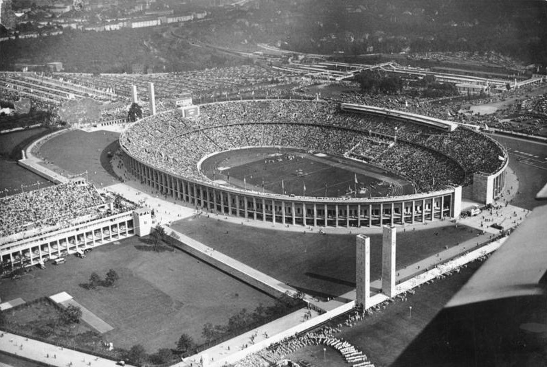
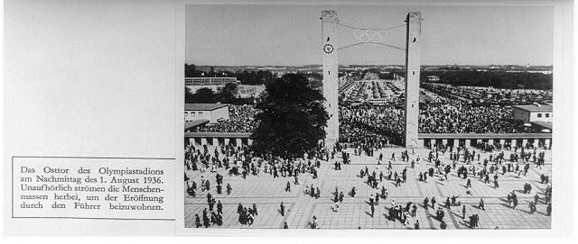
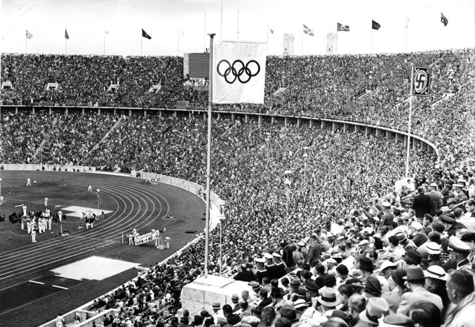
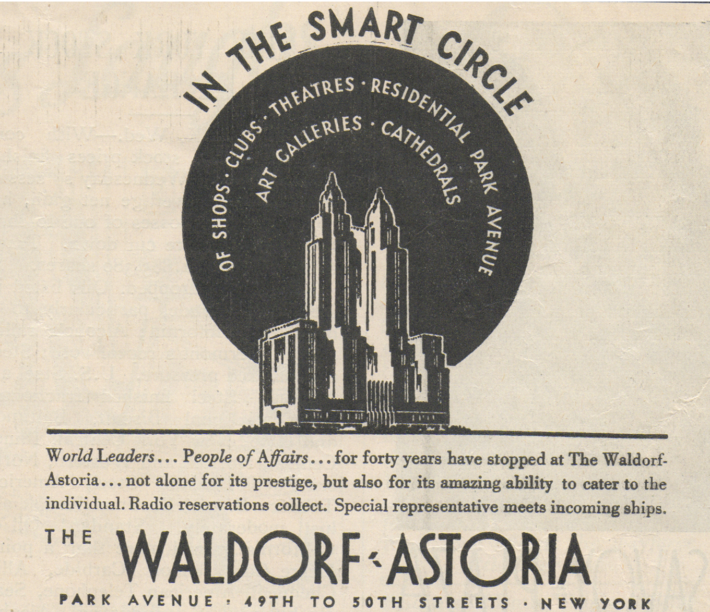
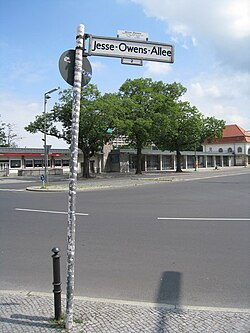

Adolf Hitler paused his plans for world domination to welcome the world for the 11th summer Olympic Games. Germans of all classes and affluent foreigners were watching in person. Another 162,000 urban Germans in Berlin and Potsdam watched via live broadcast, and people from countless nations were tuned in to their radios.
Hitler's book "Mein Kampf" had called it "a sin against all reason to train a born half-ape." A twenty-two-year-old from Oakville, Alabama was set to prove to everyone with eyes to see and ears to hear that he was not half-ape, nor three-fifths of a man. He was all man — and with the Lord's strength, over the next eight days, he just might become Superman.

Hitler spent $25 million turning Berlin into a movie set. Anti-Semitic posters were taken down. Buildings were whitewashed. The city was rehearsed, polished, masked, and costumed. At the center stood the Reichssportfeld — a new Olympic stadium complex carved into a Berlin hillside. Granite, limestone, Olympic rings cast in bronze. The perfect backdrop to remind every nation in attendance of Aryan supremacy — the Nazi belief in white European racial superiority.
One man took only seconds to disprove Hitler's lifetime of racist propaganda.
James Cleveland Owens — son of a sharecropper, grandson of an enslaved man — was born in Oakville, Alabama. He picked cotton as a boy. When he was nine, his family moved north to Ohio as part of the Great Migration: millions of African-Americans leaving the segregated South for the industrial North in search of a future their country wouldn't allow. A schoolteacher misheard his Alabama-accented "J.C." as "Jesse." The name stuck.
Charles Riley, a white track coach at Fairmount Junior High in Cleveland, spotted Owens' speed at age twelve — and noticed he rarely came to practice. Because Owens worked an after-school job to help his family, Coach Riley met him at six in the morning every weekday and trained him in the empty schoolyard for years, one-on-one. His career began in that morning sun.
In 1933, fewer than 1.3% of African-Americans aged 25 or older held a college degree. Though they say college opens doors, Owens found many closed in his face at Ohio State University. He was denied an athletic scholarship, couldn't live on campus, and had to eat at segregated restaurants when the team traveled. In college, Owens was breaking assumptions, barriers, and records. He won eight individual NCAA championships — more than anyone in college track history, before or since.
Coach Larry Snyder turned him into "the Buckeye Bullet." At the Big Ten Championship in Ann Arbor, Michigan, he tied one world record and set five others in forty-five minutes. Sportswriters called it the greatest forty-five minutes in the history of the sport. Owens called it an afternoon in May 1935.
He was twenty-two when he boarded the SS Manhattan in New York Harbor, in July 1936. It was the first time he had ever left the United States. In many parts of his own country, he could not be born in the same hospital, married with the same Bible, nor buried in the same graveyard as his teammates. He was going to run anyway. No matter how he felt about that country … and no matter how that country felt about him, he was ready to prove to himself what he could really do.
Go back in time with Dr. Niia Bishop and Adam Slocum —
to the Reichssportfeld stands, and the eight days that broke a regime's myth.
The American team almost didn't go to Berlin at all. The Nuremberg Laws — the Nazi statutes that stripped German Jews of citizenship and outlawed marriages between Jews and non-Jews — had been on the books for nearly a year. Jewish athletes had been systematically barred from training facilities, sports clubs, even from competing for their own country.
The NAACP and several American Jewish organizations urged a boycott. The NAACP's argument was sharp: African-Americans, of all people, knew what state-sponsored racial supremacy looked like — and should refuse to lend it the legitimacy of their athletic excellence. NAACP Secretary Walter Francis White notoriously drafted a letter urging Owens not to go, but he never sent it.

The American team that set sail was diverse — Owens was one of eighteen African-American athletes, alongside his college friend, sprinter Ralph Metcalfe. Two American sprinters never got to race. Marty Glickman and Sam Stoller — Owens' only Jewish teammates — were pulled from the 4×100 relay and replaced with Owens and Metcalfe. Glickman, who went on to become one of America's most famous sports broadcasters, spent the rest of his life calling it what it was.
Meanwhile, Germany was showcasing its one and only Jewish Olympian. Helene Mayer — a fencer who had been living in America for two years — was invited back to compete for Germany so the regime could deflect international criticism. On the podium to receive her silver medal, she gave the Nazi salute.
Owens was receiving the first customized sneaker before the races even began. Adolf "Adi" Dassler, a Nazi Party member and German shoemaker who would later found Adidas, walked uninvited into the Olympic Village with a pair of hand-made track spikes. He gave them to Owens, though accounts vary regarding whether or not Owens raced in them. The social, national, and cultural contradictions were literally placed at Owens' feet.
The story everyone has been told is simple: Hitler refused to shake Jesse Owens' hand. He walked out of the stadium, unwilling to acknowledge the implications of Owens' victory.
This story is not true. Not the way it's been told. What actually happened is more complicated, and ultimately more revealing. The myth was created by American sportswriters shortly after Owens first won the 100m. By the time Owens sailed home, the villain narrative of Hitler's snub was already running on three continents. He spent the rest of his life politely correcting it. Most people kept telling it anyway.
Row eleven, west grandstand. A man holds a pocket watch open in his palm. He is timing it himself because he does not trust the officials.
The stadium folds itself into a single, low hum.
The starter raises the pistol.

Four gold medals in eight days. A record that held for forty-eight years, until Carl Lewis matched it in Los Angeles in 1984. The crowd — one hundred thousand Germans, told for years what to believe about the people Owens came from — chanted his name. "Yes-say O-vens! Yes-say O-vens!"
And in the middle of the long-jump competition — when Owens had fouled his first two attempts and was one bad jump from elimination — a German athlete named Luz Long walked over and suggested he take off from six inches behind the board. Owens qualified. Long finished second. Owens won gold. Long crossed the field, embraced him in full view of Hitler's box, and walked him on a victory lap arm in arm. They wrote to each other for seven years. Ludwig "Luz" Long — drafted into the Wehrmacht, the German army — was killed in battle on Sicily during the Allied invasion on July 14, 1943. He was thirty.
Long had written Owens one last letter from Sicily. If he didn't come home, he asked Owens to find his son Kai after the war. The letter was delivered after Long's death. Owens kept it for the rest of his life. Decades later, he tracked Kai Long down in West Germany and stood with him at his father's grave.
Two young runners — Darius and Marisol — carry the version of the story everyone is taught: that Hitler refused to shake Jesse's hand. Dr. Bishop sets the record straight.


After being on top of the world for a week, Owens returned "home" to the racialized reality of America. A sharecropper's son from Oakville, Alabama wins his first gold because his German competitor helps him. They embrace in front of Hitler's box. Owens comes home and cannot enter his own banquet through the front door.
The country that was supposed to hate him gave him a friend. The country that was supposed to love him gave him the service elevator. That's the irony — and the beauty.
Sports don't fix the world. They show us what is there. Through them, we can see the whole world in one magical moment.
James Cleveland Owens was living his dream before Martin Luther King, Jr. knew to have one. He wasn't in Germany to show off or show out. He was there to find out for himself what happened when he did the very best he could, for as long as he could. One step at a time. One day at a time. One race at a time.
Medal after medal, he found that his true competitor was his former best. In 10.3 seconds, he didn't just break a record. He challenged a worldview that insisted he was inferior. His talent was undeniable. His spirit was indomitable. His courage was fierce. And he was there not only to represent America, nor even "Black America" — though his one-in-a-million talent echoed the millions of African-Americans yearning for recognition of their humanity.
Ultimately, Jesse Owens represents something larger than any nation, race, or era. He is an icon of what is possible if we unwaveringly believe in ourselves, no matter what anyone says or thinks about us.